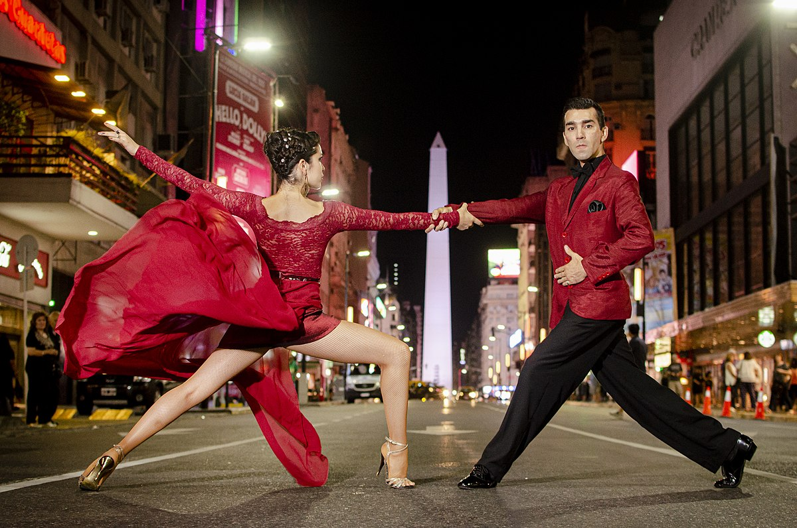
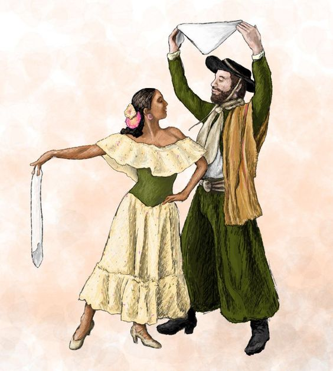
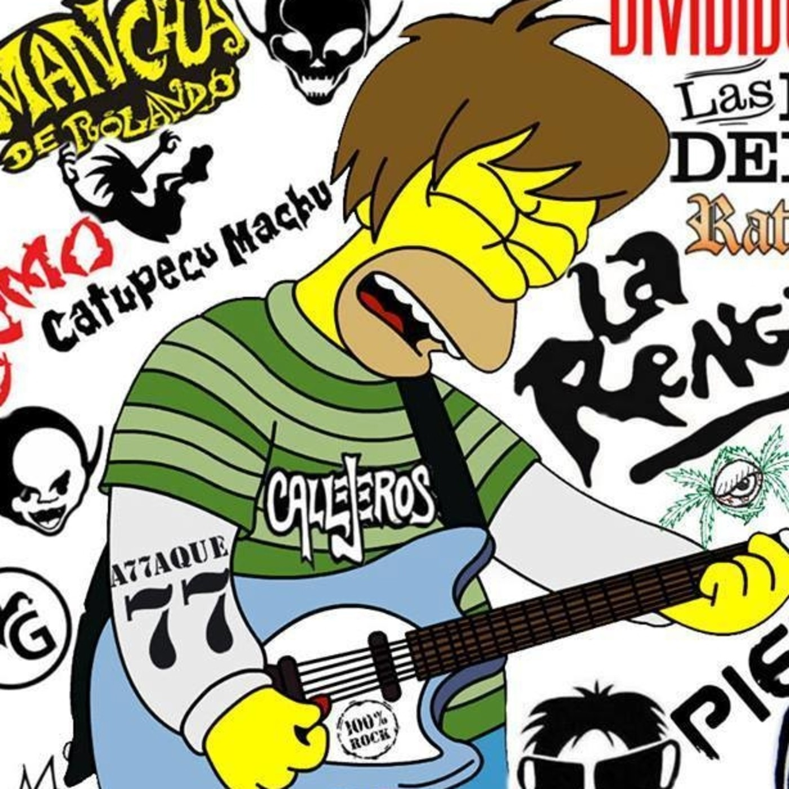

Tango
Nació a finales del siglo XIX en los barrios de Buenos Aires, especialmente en La Boca y San Telmo. Surgió de la mezcla de diversas influencias, incluyendo la música africana, la española y la italiana.
Representantes
- Carlos Gardel
- Astor Piazzolla
- Aníbal Troilo
Folklore
Cada región de Argentina tiene su propio estilo de folklore. Por ejemplo, la zamba y la chacarera son típicas del norte, mientras que la milonga es más común en Buenos Aires. Se utilizan instrumentos como el bombo, la guitarra, la flauta, y el acordeón, que aportan un sonido característico
Representantes
- Mercedes Sosa
- Atahualpa Yupanqui
- Los Chalchaleros
Rock Argentino
En la decada del 60 y 70, a partir de la influencia del rock británico y estadounidense, el rock argentino comenzó a desarrollarse, fusionando estilos locales
Representantes
- Soda Stereo
- Los Fabulosos Cadillacs
- Spinetta y Serú Girá
Cuarteto

El cuarteto es un género musical originario de Córdoba, Argentina, que se caracterizó por su ritmo alegre. Inicialmente asociado a clases bajas, ganó popularidad en los años 90 y fue declarado Patrimonio Cultural en 2013.
Representantes
- Carlos "La Mona" Jiménez
- Rodrigo Bueno
- Luck Ra